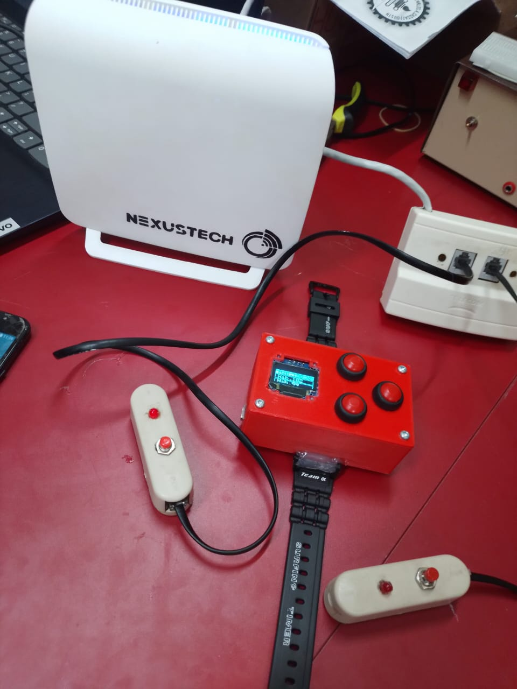
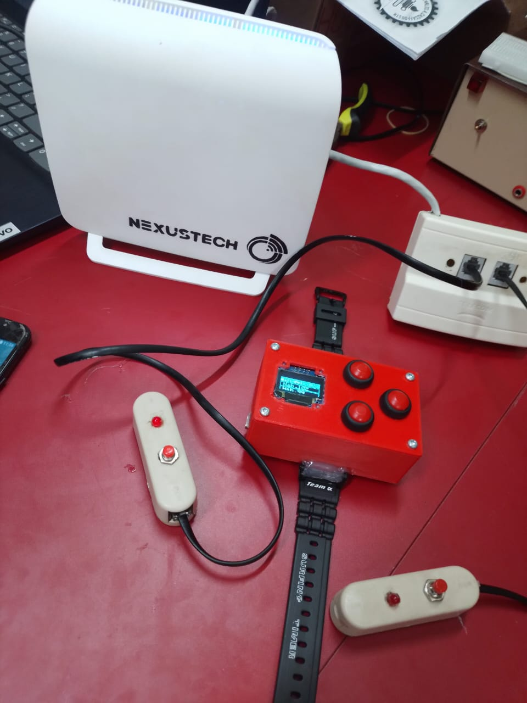

Identificara en que habitación y cama están pidiendo ayuda y les enviara la información a las pulseras. Está equipado con un RYLR 998 para maxima eficiencia en los hospitales y una base de datos que permite saber que pulseras atendieron a que pacientes.
| Componente | Descripción |
|---|---|
| ESP32 | Procesa las decisiones |
| RYLR998 | Transmite los datos a las pulseras y recibe sus respuestas |
| MCP23017 | Permite la conexión de las habitaciones a la central |